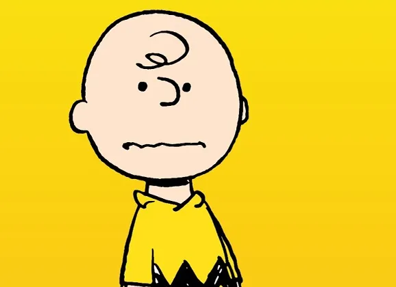
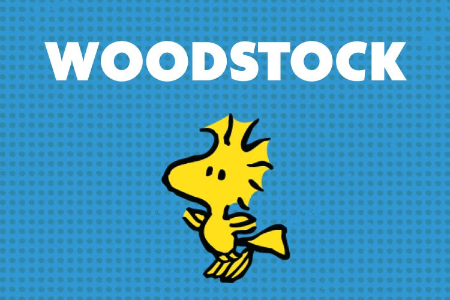

Personajes Principales
Snoopy
Snoopy es un beagle, una raza de perros conocida por su tamaño mediano y su pelaje predominantemente blanco con manchas negras y marrones, anda en dos patas y nunca entra en su caseta, prefiere dormir en el techo de la misma.
Charly Brown
Snoopy es un beagle, una raza de perros conocida por su tamaño mediano y su pelaje predominantemente blanco con manchas negras y marrones, anda en dos patas y nunca entra en su caseta, prefiere dormir en el techo de la misma.
WOOD STROCK
Woodstock (conocido como Emilio en algunos países de Latinoamérica y en España) es uno de los personajes secundarios creados por Charles Schulz para la tira cómica Peanuts conocida en castellano como «Charlie Brown y Snoopy» o «Rabanitos». Woodstock es un pájaro amarillo y el mejor amigo de Snoopy. También aparecen en la serie una cantidad muy variada de pájaros exactamente iguales a Woodstock en diferentes episodios, sin que pueda decirse con certeza cuál es el original, pues todos comparten el mismo carácter y personalidad